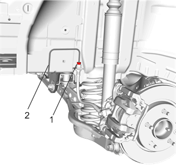
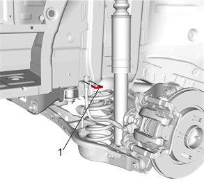
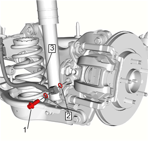

后制动软管的更换
拆卸程序
- 1.举升并顶起车辆。举升和顶起车辆
- 2.后轮轮胎和车轮总成»拆下 –轮胎和车轮的拆卸和安装
-

3.制动管接头 (1)»断开
- 4.盖住制动管接头，以防止制动液损失和污染。
-

5.制动软管固定件 (1)»拆下
-

6.后制动软管接头螺栓 (1)»拆下
- 7.后制动软管接头衬垫 (2)»拆下并报废[2x]
- 8.塞住制动钳进口，以防止制动液流失和污染。
- 9.后制动软管 (3)»拆下
安装程序
-
1.将后制动软管 (3) 安装到车辆上。
-
2.后制动软管接头衬垫 (2)»安装[2x]
-
3.后制动软管接头螺栓 (1)»安装并紧固40N•m（30 lb ft）
-
4.制动软管固定件 (1)»安装
-
5.安装制动管接头 (1)，并紧固至18N•m（13 lb ft）。
- 6.排出制动系统中的空气。液压制动系统的排气
- 7.后轮轮胎和车轮总成»安装 –轮胎和车轮的拆卸和安装